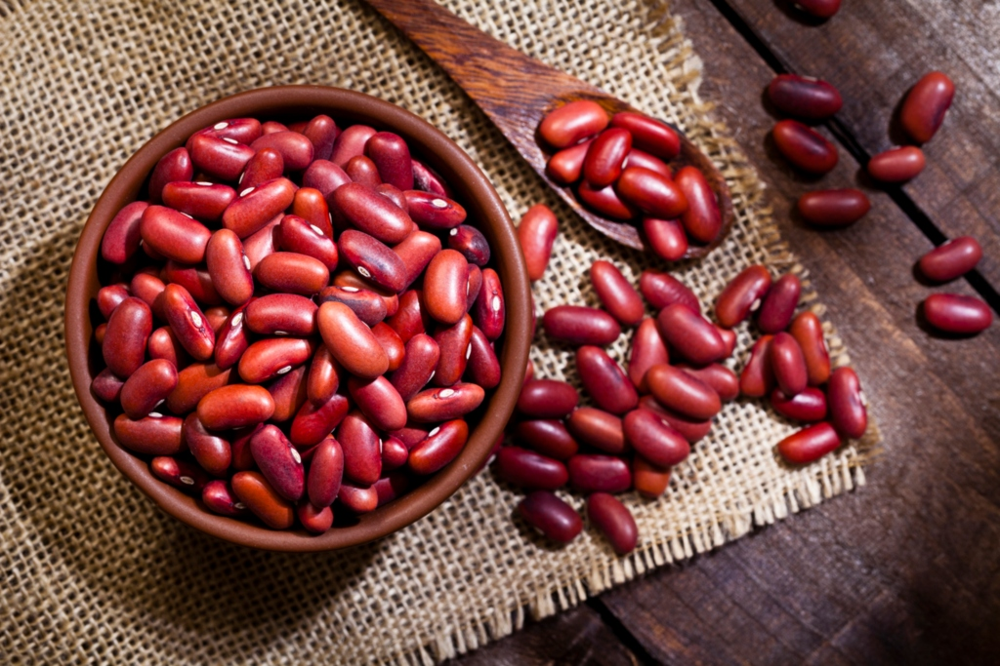
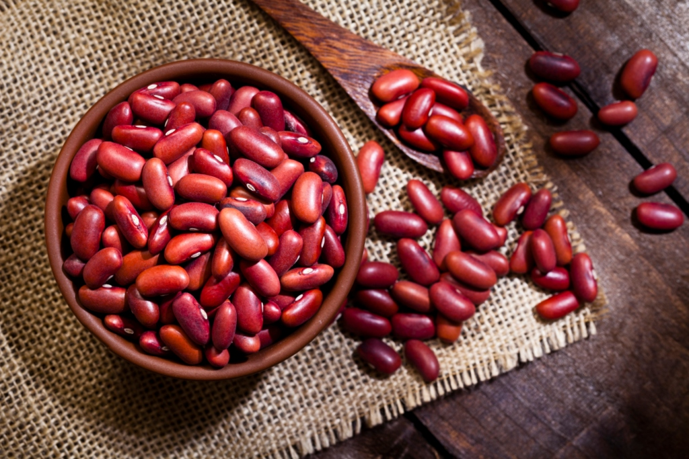

Economía de los Chorotegas en Honduras
Actividades económicas principales
Los chorotegas establecidos en el sur de Honduras desarrollaron una economía basada en la agricultura, la pesca, la caza y el comercio local. Su entorno geográfico, con acceso al Golfo de Fonseca y fértiles valles, les permitió cultivar diversos productos y mantener una autosuficiencia económica notable.
| Producto | Uso | Zona de cultivo |
|---|---|---|
| Maíz | Alimento básico para tortillas, tamales | Nacaome, El Corpus |
| Frijoles | Fuente principal de proteína vegetal | Valle del río Nacaome |
| Yuca | Complemento alimenticio | Apacilagua, Marcovia |
| Calabaza | Uso alimenticio y medicinal | Zona costera del sur |
 

Pesca y caza
Los chorotegas aprovecharon el acceso al mar para la pesca de moluscos, peces y crustáceos, especialmente en la zona de Amapala y San Lorenzo. También cazaban venados, armadillos y aves silvestres como complemento alimenticio.
Comercio
Participaban en redes de comercio con otros pueblos indígenas del sur de Honduras e incluso con comunidades del interior del país. Intercambiaban cerámica, sal, maíz, cacao y tejidos por herramientas de obsidiana o jade.
| Producto ofrecido | Producto recibido | Zona de comercio |
|---|---|---|
| Cerámica decorada | Jade o piedra tallada | Comayagua, Valle |
| Sal del Golfo | Cacao | Intercambio con Lenca |
| Telas de algodón | Herramientas de obsidiana | Centro de Honduras |
Economía familiar y comunitaria
La economía chorotega se basaba en el trabajo colectivo. Las familias cultivaban en parcelas comunales y los excedentes eran almacenados en graneros comunitarios. Este sistema permitía la redistribución durante épocas de escasez y mantenía un equilibrio económico en las aldeas.
Las mujeres jugaban un papel activo en la economía: además de preparar los alimentos, producían tejidos y cerámica, y en muchos casos eran responsables del comercio local.
Importancia económica en la región
Debido a su ubicación estratégica en el sur de Honduras, los chorotegas se convirtieron en intermediarios económicos entre pueblos del interior y las costas. Su organización agrícola y comercial los volvió una cultura económicamente estable antes de la llegada de los conquistadores.